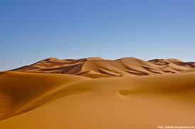
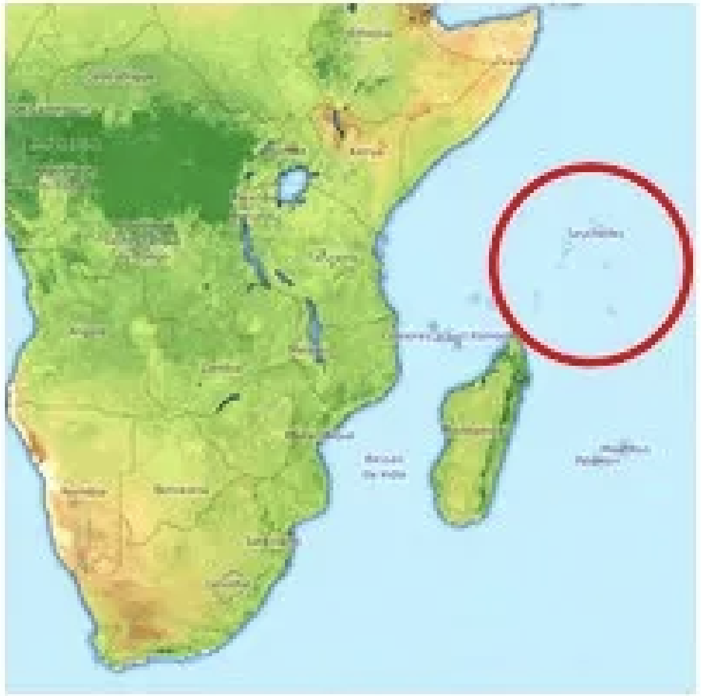

- Африка є другим за площею континентом, що становить приблизно 22 % всієї території, займаної сушею.
- Включно зі спірною територією західної Сахари, і прилеглими острівними державами, в Африці налічується 54 незалежні країни.
1п > ul + p Африка розташована найбільш централізовано щодо світової системи координат. Її перетинає й нульовий меридіан (0 градусів довготи) й екватор (0 градусів широти).
2п Хоча населення Африки становить приблизно 16 % відсотків від світового населення, на чверті мов, що є на планеті, розмовляють тільки в Африці.
3p > Чисельність населення Африки становить приблизно 1,2 мільярда осіб. За останні сорок років тут стався справжній демографічний вибух, і тому середній вік населення на цьому континенті порівняно невисокий. У багатьох державах Африки половина населення не досягла ще віку 25 років.
+ p
~p Найстарішою цивілізацією, яка зародилася в Африці була держава фараонів у стародавньому Єгипті. Вона почалася приблизно за 4 500 років до нашої ери.
-
В Африці розташована найбільша у світі пустеля Сахара, яка займає більшу територію, ніж уся континентальна частина США.

- [class*="__sublist"] Арабська мова, представлена різними діалектами, і є найпоширенішою мовою Африки. 170 мільйонів людей, що говорять цією мовою, живуть переважно в Північній Африці. Крім арабської, на континенті говорять ще на 2000 мовах.
-
Нігерія є найбільш населеною країною в Африці, чисельність населення якої становить 174 млн осіб. У другій за населеністю країні, Єгипті, живе понад 92 млн осіб.
- Найбільш населеним містом Африки є Каїр, столиця Єгипту. На території цього мегаполісу проживає приблизно 19 млн осіб.
- Найбільша країна Африки — це Алжир. Її повна територія становить 2,3 млн км².
- Найменшою країною Африки є Сейшельські острови, чия територія становить усього 443 км²

натисни на картинку
- Через Африку протікає друга у світі по довжині річка — Ніл, протяжність якої становить 6650 км.
параграф голубого кольору
[class*="__sublist"] Арабська мова, представлена різними діалектами, і є найпоширенішою мовою Африки. 170 мільйонів людей, що говорять цією мовою, живуть переважно в Північній Африці. Крім арабської, на континенті говорять ще на 2000 мовах.
Найстарішою цивілізацією, яка зародилася в Африці була держава фараонів у стародавньому Єгипті. Вона почалася приблизно за 4 500 років до нашої ери.
До першого століття нашої ери Африку підрозділяли на три частини: Єгипет, Лівія та Ефіопія. Назва Ефіопія відносилася й до решти території континенту, що була розташована південніше пустелі Сахара.